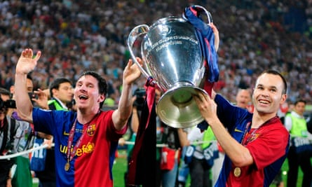
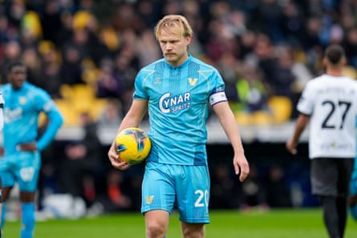
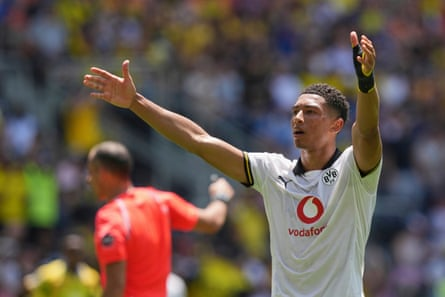

“Has a team won the Champions League without beating any reigning champions?” asks Paddy French. “And if not, which teams have beaten the fewest champions to win it? And which teams have beaten the most champions in winning the Champions League/European Cup?”
Let’s just clarify that Paddy is referring to reigning league champions, here, not reigning European champions, to which we had a few answers. Even in an era in which many Champions League teams are also-rans from the big leagues around Europe, the answer to the first question is no.
Dirk Maas was quickly in touch (with some others) to tell us this before digging into the details to find an answer for the teams that have beaten the fewest reigning league champions. “Liverpool (2004-05), Barcelona (2005-06), Manchester United (2007-08), Chelsea (2011-12 and 2020-21) and Real Madrid (2015-16) have beaten only two league champions en route to their Champions League triumph,” writes Dirk. “Of these teams, Liverpool eliminated the most non-reigning champions: six. Their first (Grazer AK, in the final qualifying round) and their last opponents (Milan, in the final) were 2003-04 champions. In between, Monaco, Olympiakos, Deportivo La Coruña (in the group stage), Bayer Leverkusen (in the round of 16), Juventus (quarter-finals) and Chelsea (semi-finals) were not. Last season, Paris Saint-Germain came close to Liverpool’s record: beating three champions and nine non-reigning champions.”
Barcelona defeated six reigning league champions when they win the Champions League in 2009.Photograph: Manu Fernández/AP
Peter Tomlin has mailed in with the lowdown on teams that have beaten the highest number of reigning league champions on their way to lifting the European Cup/Champions League. “The answer is six – and this has been achieved on six separate occasions, with the most recent being Barcelona in 2014-15,” he writes. “They beat Apoel, Ajax, PSG, Manchester City, Bayern Munich and Juventus. The other teams to match this feat were as follows: 2008-09 Barcelona (Wisla Krakow, Shakhtar Donetsk, Basel, Lyon, Bayern Munich, Manchester United) 1999-00 Real Madrid (Porto, Olympiakos, Dynamo Kyiv, Rosenborg, Bayern Munich, Manchester United) 1996-97 Borussia Dortmund (Widzew Lodz, Steaua Bucharest, Atlético Madrid, Auxerre, Man Utd, Juventus) 1995-96 Juventus (Borussia Dortmund, Steaua Bucharest, Rangers, Real Madrid, Nantes, Ajax) 1991-92 Barcelona (Hansa Rostock, Kaiserslautern, Sparta Prague, Dynamo Kyiv, Benfica, Sampdoria).
“With the current format, it would be mathematically possible to defeat 17 champions if a club started in the first qualifying round, won all eight matches in the group phase then went all the way to the final, having been drawn against reigning champions in every match, although this scenario is extremely unlikely.”
Dirk has been back in touch to add Marseille (1992-93), Milan (1993-94) and Barcelona (2014-15) to that list of teams on six but we have Marseille drawing with Rangers twice in the group stage so that means they are stuck on five. So we have eight European Cup-winning teams who achieved the feat of beating six champions.
Top scorer for two clubs in one season
“This past season Finnish striker Joel ‘Danger’ Pohjanpalo was the top goalscorer for the two teams he represented: Venezia in Serie A and Palermo in Serie B,” notes Ville Leino. “Has this feat been accomplished by any other players?”
We may have answered this before in an ancient Knowledge though our search through the archive has drawn a blank, and we’re getting old, so forgive us. In any case our friend and yours, Dirk Maas, has presented us with the distinguished group of hotshots which Pohjanpalo has now joined.
Klaas-Jan Huntelaar (Heerenveen and Ajax): 2005-06 Eredivisie. Kris Boyd (Kilmarnock and Rangers): 2005-06 Scottish Premier League. Dieter Schatzschneider (Hannover 96 and Fortuna Köln): 1982-83 2. Bundesliga.
Finnish hotshot Joel ‘Danger’ Pohjanpalo prepares to take a penalty for Venezia in January.Photograph: Giuseppe Maffia/NurPhoto/Shutterstock
Long gaps between first goal and season opener
“After seeing that Jobe Bellingham had scored for Borussia Dortmund in their Club World Cup game against Mamelodi Sundowns, it occurred to me that his first competitive goal for his new club has come an awful long time before the start of his first domestic campaign with the team,” emails Alexander Craig. “Has there been a longer gap before?”
“Look no further than the Covid-19 pandemic,” begins David Ekstrand. “In Sweden, the group stage of the Swedish Cup had just been completed when football was suspended and the start of the league season was postponed. This meant, for example, that Alexander Johansson, a new signing from Tvååker, scored a consolation goal for newly promoted Varberg against Hammarby in a 5-1 defeat on 24 February, 2020. It would be 113 days until Varberg played their first-ever Allsvenskan game, a 3-0 win at Helsingborg, on 15 June.” So Johansson beats Jobe’s two-month wait by some distance.
Jobe Bellingham celebrates after scoring his first goal for Borussia Dortmund.Photograph: Carolyn Kaster/AP
More non top-flight teams playing in Europe
We have had some additions to our list of second-tier clubs playing in Europe. Sunderland (1973-74) and Southampton (1975-76) played in the Cup Winners’ Cup after unexpected FA Cup glory. And until 1999, as Gareth Thomas points out, Welsh teams playing in the English Football League could qualify for the Cup Winners’ Cup by winning the Welsh Cup. Here’s a list of them:
Newport County: one appearance in Cup Winners’ Cup; best performance QFs in 1980-81; lowest position when qualifying third in fourth tier in 1979-80. Wrexham: five appearances in Cup Winners’ Cup; best performance QFs in 1975-76; lowest position when qualifying 13th in fourth tier in 1985-86. Swansea City : seven appearances in Cup Winners’ Cup; best performance second round in 1982-83; lowest position when qualifying 17th in third tier in 1965-66. Cardiff City: 14 appearances in Cup Winners’ Cup; best performance SFs in 1967-68; lowest position when qualifying ninth in the fourth tier in 1991-92.
Knowledge archive
“England won the European Under-21 Championship with a few players aged 22,” begins Dom Miller. “This is due to current age rules of players being eligible if born on or after 1 January 2002, so 21 or younger at the start of the year the qualification began. The oldest player in the tournament was Stoke City’s Million Manhoef, who was born on 3 January 2002. He was 23 years, five months and 25 days old on the day of the final. However, I’m sure back in the 70s and 80s sides were allowed a couple of over -age players. So who is the eldest under 21 player?” You’re right Dom, and we answered this question back in 2009 . Here is the most relevant part.
Michael Haughey points out, Under-21 teams used to be allowed to have over-age players. “The oldest U-21 player I can think of,” he writes, “was Hamish McAlpine of Dundee United and Scotland who played five games for the Scottish Under-21 team when he was 35.” And all above board too. Unlike some others Pablo Miguez could mention: “Brazilian Carlos Alberto played in the 2003 Youth World Cup at a mere 25 years old. He admitted it later, and that caused him to be suspended for a year.”
Can you help?
“Emi Martínez was sent off on the last day of the season, followed by rumours of a return to Argentina. Should he join a club beyond the FA’s reach what happens to his suspension? Is it held in abeyance or can he have a suspension ‘time out’?” asks Paul Mumby.
“ While looking up Adam Lallana on his retirement, I noticed he was a runner-up in League One and the Championship with Southampton and the Premier League with Liverpool. He also has runners-up medals in the Champions League, League Cup and Europa League,” writes Paul Savage. “So that’s six different competitions he’s been runner-up in. Can anyone top that? Or is there anyone who can equal it but without winning anything? He’s was also in the PFA team of the year in three divisions. Can anyone top that?”
“As of 30 June, Ángel Di María tops the Club World Cup Golden Boot race with four goals – all of them penalties. Has anyone in any major tournament ever won a Golden Boot with all of their goals being scored from the penalty spot?” asks Tom Dempster.
Ángel Di María with a cheeky no-look penalty for Benfica against Chelsea at the Club World Cup.Photograph: Brian Westerholt/EPA
“Has there ever been a league season in which all of a division’s relegated teams beat that season’s division champions during the course of the campaign?” asks Michael.